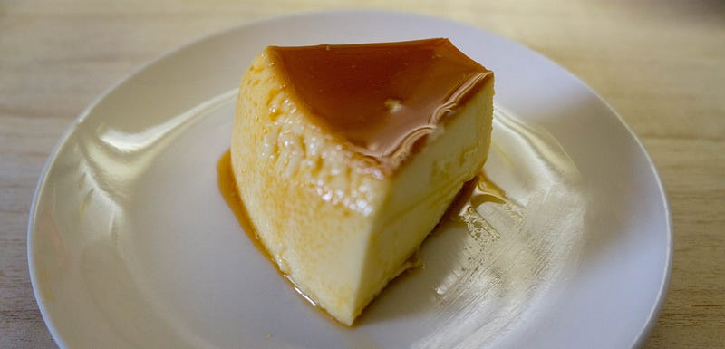
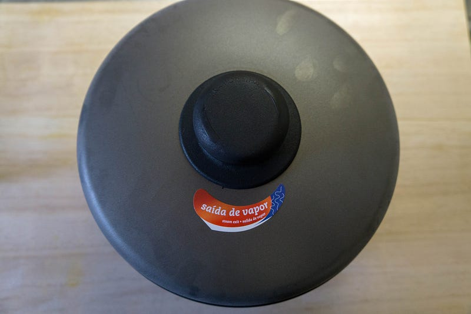
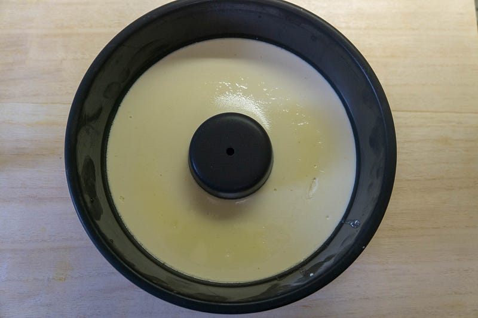
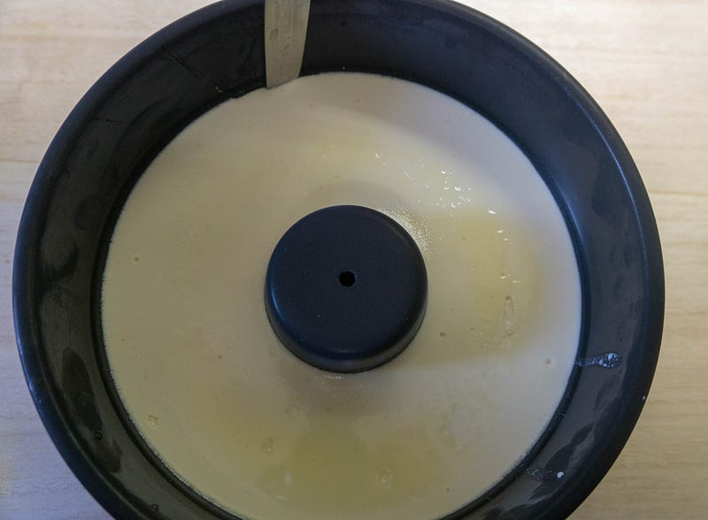
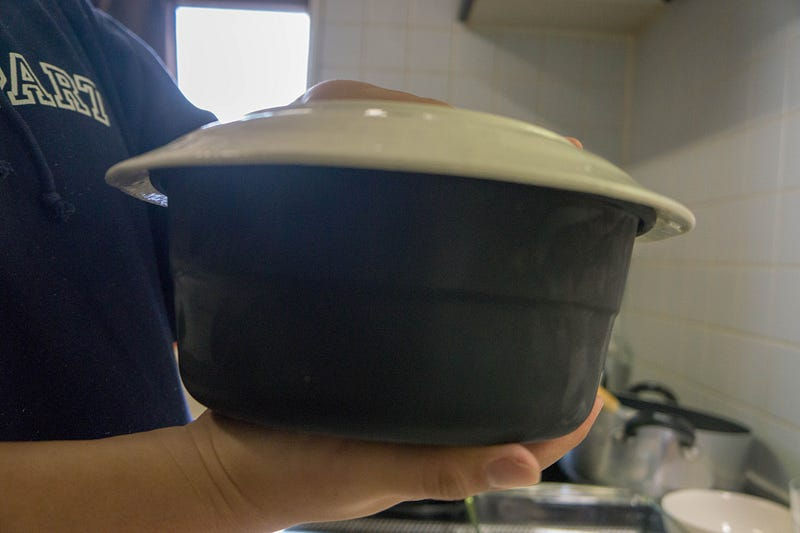
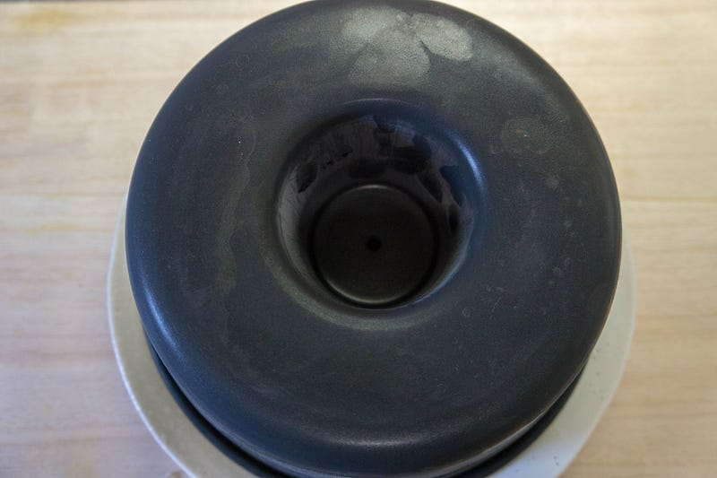
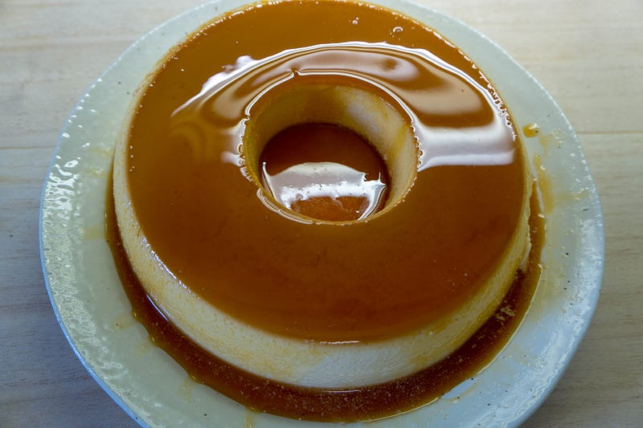
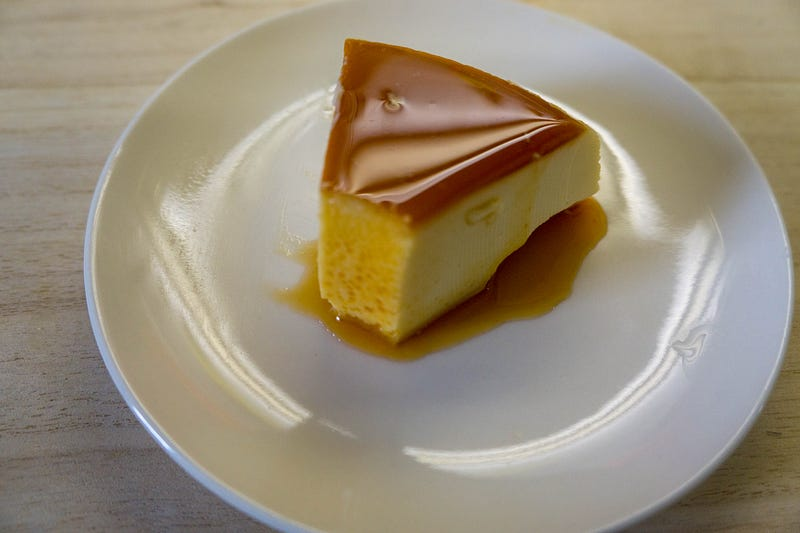

完全体のPudim de Leite(ブラジルプリン)を食べる。
完全体のPudim de Leite(ブラジルプリン)を食べる。
やりました。妻が完璧、完全なPudim de Leite（ブラジルプリン）を作ってくれました。プリンの高さも充分あり、ついに至高の作品ができあがりました。なんちゃってブラジル人の私も大満足です！

これ以上このエントリで言うことはない。うまい。シュラスカリアに行かなくてもプリンを家で食べられることがわかって幸せで一杯です。
なおこれを食べなれると日本のフワフワプリンは食べられなくなるので注意。
と、これでけで終わるとあれなので、まず今回使った機材について。プリンの型はネットでブラジル製品を売ってるところから購入。
TRAMONTINA 両手鍋20cm＆ケーキモウルド20cmセット(バニョマリア) パリス - ブラジル食品・ペルー食品の通販・卸なら、キョウダイマーケット♪大人気アサイー、その他アサイー関連商品…
ブラジル食品・ペルー食品を中心とした南米輸入食品・雑貨総合通販サイトです。アサイー、マテ茶、アルパカマフラー、南米商品をお探しならキョウダイマーケット！kyodaimarket.com
ブラジル食品・ペルー食品を中心とした南米輸入食品・雑貨総合通販サイトです。アサイー、マテ茶、アルパカマフラー、南米商品をお探しならキョウダイマーケット！kyodaimarket.com
前回作った時はスーパーで森永の加糖練乳が商品入れ替え？でなくなっていてエバミルク（無糖練乳）で作って落ち込んでいた妻でしたが、上記の店でちゃんとブラジルの練乳を購入。
コンデンスミルク ネスレ 385g Moca
ネスレの練乳、コンデンスミルクです。苺にかけても、お菓子にかけても美味しく召し上がれます。また、カシャーサ（ピンガ）とフルーツと一緒にミキサーにかけてスペシャルスウィートラテンカクテルも作れます☆amzn.to
ネスレの練乳、コンデンスミルクです。苺にかけても、お菓子にかけても美味しく召し上がれます。また、カシャーサ（ピンガ）とフルーツと一緒にミキサーにかけてスペシャルスウィートラテンカクテルも作れます☆amzn.to
レシピは前回書いたエントリを参照してください。
ブラジルプリン（Pudim de Leite)を（妻と子供達が）作る
ちょっと前に僕の誕生日のために作ってくれたブラジルプリンことPudim de Leiteを妻がまた作ってくれた。今度は子供達もちょっと手伝ってくれた。medium.com
ちょっと前に僕の誕生日のために作ってくれたブラジルプリンことPudim de Leiteを妻がまた作ってくれた。今度は子供達もちょっと手伝ってくれた。medium.com
作ったのは妻なんだけど、最後のひっくり返しだけは（怖いので）僕にやれ、ということでやりました。

これをあけると、

こうなっているので、

ナイフでちょいと切り込みを入れて


ひっくり返す。何回か上から衝撃を与えてやると…

うわああああああああああああああああああああああおおおおおおおおおおおおおおおおおおおおおおおおおおおおおおおおおおお！！！！テンションあがる！！！！

そしてみんなで食べました。ああ、うまい… うますぎるよ…
甘くてどっしりとしたプリン。はあ… 素晴らしすぎる。